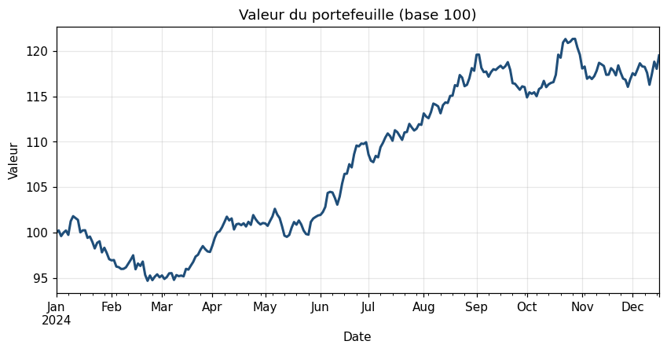

Notebook Jupyter
Analyse d'un portefeuille d'actions
Un carnet d'analyse où j'explore la performance et le risque d'un portefeuille de 4 actions (Apple, Microsoft, LVMH, Airbus) à partir d'un historique de prix.
Évolution du portefeuille

Sur la période, le portefeuille pondéré (30/30/20/20) finit à
119,5 en base 100, soit +19,5 %.
Indicateurs par action
| Action | Rendement ann. | Volatilité ann. | Sharpe |
|---|---|---|---|
| AIR.PA | +84.0 % | 19.3 % | 4.24 |
| MSFT | +21.9 % | 17.4 % | 1.14 |
| AAPL | +8.7 % | 18.5 % | 0.36 |
| MC.PA | -21.2 % | 22.2 % | -1.04 |
- Airbus affiche le meilleur couple rendement/risque (Sharpe le plus élevé).
- LVMH décroche sur la période (Sharpe négatif).
- Les corrélations entre actions sont faibles → la diversification joue bien.